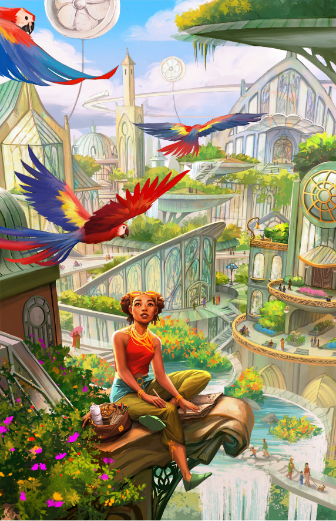
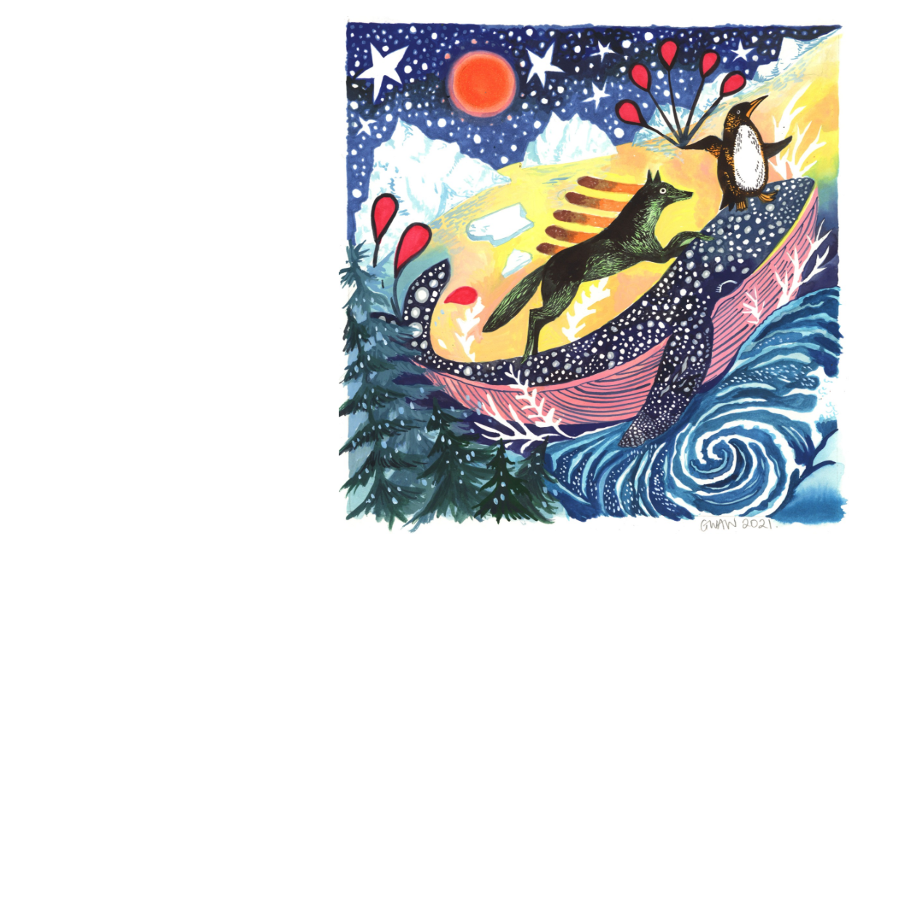
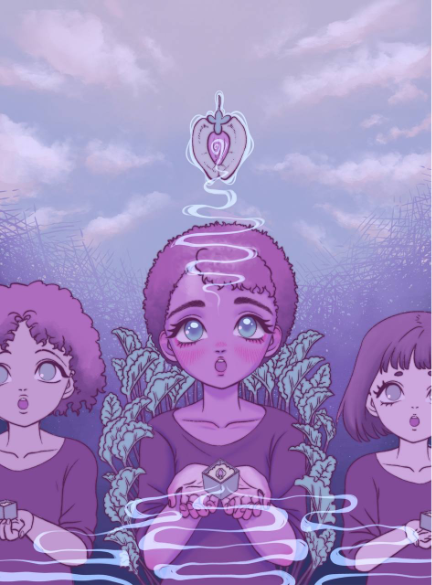
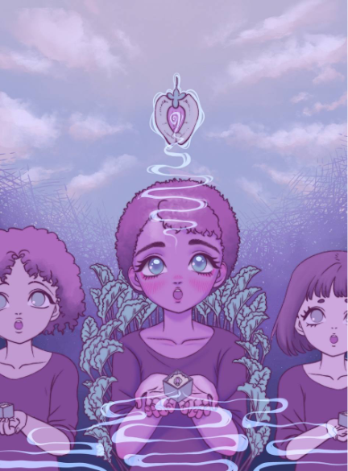

The artwork
Rita Fei

Rita Fei is an illustrator based in Vancouver, BC, and who graduated from Emily Carr University of Art and
Design. She loves creating characters and worlds for the wonderfully broad spectrum of speculative fiction,
and had a piece published in Spectrum 26. She is currently working full-time as a designer at Bardel
Entertainment, and occasionally as a freelancer for various projects. Her entry for the Solarpunk Atomhawk
competition was chosen as the title image for this Showcase.
Nikunj is an aspiring graphics designer based in Mumbai, India. While he studied engineering in college,
he has always enjoyed bringing characters and worlds to life through art. Recently, he has shifted to the
digital medium and is trying to combine his passion for art with his desire to tackle climate change. While
working full-time in climate philanthropy, he moonlights as a freelancer for various projects.
Nikunj
Bhimsaria
Bhimsaria


Mori is a digital artist from a small city in Chile. After studying Illustration and Graphic Design in
DuocUC, she’s worked on several freelance projects: drawing characters for TV animations, illustrations for
books and websites, t-shirt designs, prints, and posters. She’s also collaborated with several artists and
participated in local Illustration fairs. Nowadays she is focused on creating new merch with the Dream.Mori
signature. Mori is inspired by dreams, the unconscious and intrusive thoughts, which she combines to create
evocative sensations through a digital canvas. Her favourite hobby is sculpting dolls with air-dry clay.
MORI
Dustin Jacobus is a Belgian illustrator, industrial design engineer, and a learning & development
expert, with special interests in biomimicry, sustainable design, and futurism. He started his career as a
technical illustrator and 3D CAD designer. After he finished his futurism research project ‘Universitas’, he
continued doing artistic research about different Solarpunk topics. His work has appeared in several
international publications such as ‘Solarpunk, design ed estetica industriale’, a technical book about
Solarpunk, written by Eric Hunting and published in Italy by Future Fiction.

Dustin Jacobus

Becky Bolton and Louise Chappell have been working collaboratively as since 2007,
soon after graduating from the Painting Department at The Glasgow School of Art. They divide their time
between designing large-scale installations for fine art settings and undertaking illustration commissions
from a diverse range of companies worldwide, including The BBC, Penguin, Facebook, Absolut, Adidas and
Swatch. They have exhibited around the world, including shows in London, Berlin, Paris, Melbourne, Buenos
Aires, San Francisco and Sao Paulo, and are currently based in London.
Goodwives and warriors

João Queiroz is a Brazilian digital artist born in the Amazonian state of Rondônia. His work focuses on
science fiction, especially in the Solarpunk and Cyberpunk genres. In 2019, he created a project named Amazofuturism, an ongoing series of illustrations that mixes Solarpunk and cyberpunk aesthetics with Brazilian
Indigenous peoples’ cultures, making its own brand of Indigenous Futurism. He hopes to continue to help
build a greener future through art. You can find him on Instagram and Twitter at @q1r0z.
João Queiroz
~
Hal Hefner is an illustrator, pop artist and writer based in Los Angeles, CA who has created art for digital
publications, books, movies, games, animation, TV, streaming series, advertising, and much more. He is known
worldwide for his Pop Art series, CONSUME, inspired by John Carpenter’s cult classic film, They Live. He is
also the writer and creator of Heavy Metal Magazine’s first webcomic, Gates. Hal is currently in production
on a massive multimedia Solarpunk project called the Serpentseed, which combines elements of sci-fi and real
world activism designed to evoke action and awareness for climate change.
Hal Hefner
Nico Lob is a South Korea-based Chilean artist who has professionally explored a variety of digital artistic
means such as audiovisual, illustration, and editorial. Her unusual art is often appreciated as a balance of
oddity and cuteness. Captivated since childhood by fantastic worlds of western cartoons and Asian animation,
Nico started out as a graphic designer but has recently started to dabble in the character design field. She
is currently exploring digital drawing and storytelling, and aspires to develop characters for the
game/animation industry.
Nico Lob


Artwork coming
soon
soon
Artwork coming
soon
soon
About
the judges
Home
Donate
Contact
Stories

 
